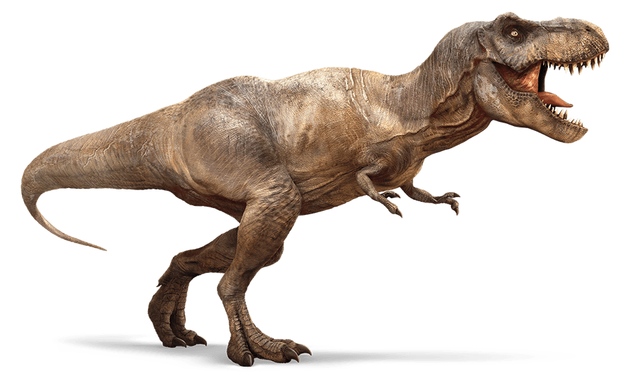

245 to 240 Million Years Ago
Nyasasaurus parringtoni, earliest known dinosaur to exist.


220 to 66 Million Years Ago
Pterosaurs Existed.
Click here to watch a video on PterosaursVisit pterosaurs on the 4th floor in the Hall of Vertebrate Origins
200 Million Years Ago
Pangea separates.
199 to 145 Million Years Ago
Paraves, ancestor of the modern-day birds, existed.
Click here to watch a video about ParavesTo learn more about praves, visit the Dinosaurs Among Us exhibit in the LeFrak Family Gallery on the 4th floor.
141 Million Years Ago
Cretaceous period. (Lasted 65.5 million years)
Click here to read more about the Cretaceous period
85 to 65 Million Years Ago
Tyrannosaurus Rex Existed.
Click here for children-friendly reading on the T-RexVisit the T-Rex in the Hall of Saurischian Dinosaurs on the 4th floor.
75 Million Years Ago
Meet the Titanosaur!
Click here to learn more about the TitanosaurVisit the Titanosaur at the Wallach Orientation Center on the 4th floor.
Diet
Titanosaurs were herbivores however, the vegetation did not provide them with much nutritional value. Its five-story long neck allowed it to reach tall trees and vegetation without ever moving their body.
Nesting
Female titanosaurs dug holes with their hind legs and laid about 30 to 40 eggs per hole. The fertilized eggs were about 11 cm long in diameter and had bead-like scales on their skin protecting them from predators. Titanosaurs laid their eggs near active volcanoes because the added heat helped with incubation.
Location and Time Period
The titanosaur (sauropods group) existed 100 to 66 million years ago during the Cretaceous era. Titanosaur fossils have been found on every continent.
How was it found?
The Titanosaur was found by a farmer who was looking for a lost sheep when he spotted some fossils peeking out of the ground in La Flecha, Argentina. He then contacted scientists who realized the dinosaur was different from the rest of those previously discovered.
Physicality
The titanosaur’s femur was 8 feet long, the largest ever found. Scientists first noted its uniqueness because the lower end of the femur was straight as opposed to flared like that of other dinosaurs. The swing of their tail helped impulse their legs to walk and counteracted their heavy neck. The titanosaur was 20 feet tall from the ground up to its shoulder and over 3 times the size of a school bus. It weighed approximately 70 tons and evolved to walk on horseshoe-like stumps to reduce the impact walking had on the bones.
Theories Over Death
The average titanosaur’s lifespan was 50 years. The first theory over their extinction was that because young males were usually isolated from herds at birth, they often died at a young age, leading to females not being able to reproduce. The second theory is that because there were active volcanoes in the area, titanosaurs laid their eggs in the area because of the heat the volcanoes emitted. However, when the volcanos erupted, it eradicated all vegetation, starving the, and eventually killing them.
Negative Aspect of Its Size
The titanosaur’s large size made the flow of blood and oxygen from the heart and brain to the rest of the body slower and harder. Its massive size and weight made the titanosaurs move slower because it took longer for nerve signals to reach the brain.
Positive Aspect of Its Size
The titanosaur’s large size deterred any potential predators from attacking. Its long neck allowed it to have greater access to vegetation in tall trees.
Exhibit
The exhibit at the Museum of Natural History was inaugurated in January of 2016 and is on exhibit on the fourth floor. The titanosaur is too big for its hall, therefore its head is poking out warmly welcoming guests to the hall.
Click here to learn more about the titanosaurAdditional Info
It took scientists two weeks to put all of the casts together and get them ready for the exhibit. Over the two years it took to dig up the 223 bones, these paleontologists transformed the knowledge of dinosaurs.
Click to learn more about building the titanosaur57 Million Years Ago
The first primates, Euprimates, existed.


2004
Discovery of Tiktaalik - A transitional form between lobe-finned fish and tetrapods is discovered in Canada.
Read more